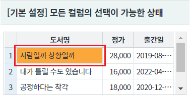
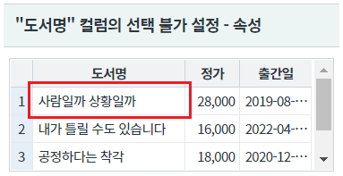
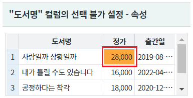
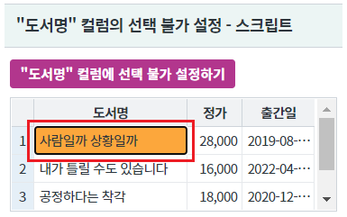
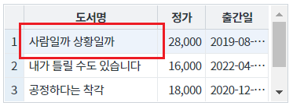
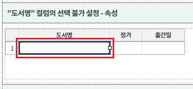
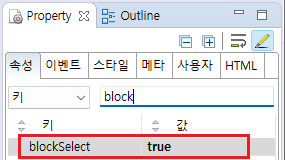
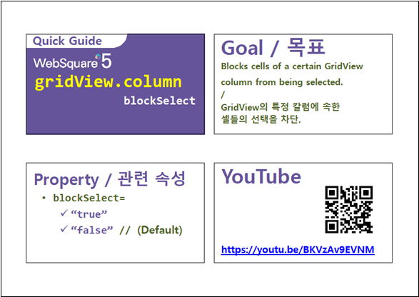
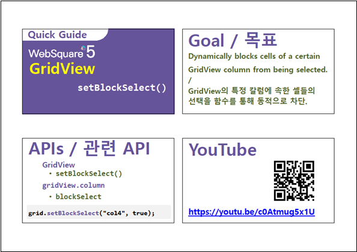

GridView의 특정 컬럼을 선택하지 못하도록 설정하는 예제입니다.
[기본 설정] 모든 컬럼의 선택이 가능한 상태
특정 컬럼의 선택이 불가한 상태- 속성으로 설정
특정 컬럼의 선택이 불가한 상태- 스크립트로 설정
설정별 영역의 GridView의 "도서명" 컬럼의 Cell을 클릭하여 선택(포커스) 여부를 비교합니다.
"[기본 설정] 모든 컬럼의 선택이 가능한 상태" 영역의 GridView의 1번째 셀을 클릭합니다.
셀이 선택됨을 확인합니다.
[브라우저(Chrome) 실행 예시 - 셀 선택 예시]

"도서명" 컬럼의 선택 불가 설정 - 속성 영역의 GridView의 1번째 셀을 클릭합니다.
셀이 선택되지 않는 것을 확인합니다.
[브라우저(Chrome) 실행 예시 - 셀 선택 예시]

셀이 선택되는 것을 확인합니다.
[브라우저(Chrome) 실행 예시 - 셀 선택 예시]

"도서명" 컬럼의 선택 불가 설정 - 스크립트 영역의 GridView의 1번째 셀을 클릭합니다.
셀이 선택되는 것을 확인합니다.
[브라우저(Chrome) 실행 예시 - 셀 선택 예시]

-
셀이 선택되지 않는 것을 확인합니다.
[브라우저(Chrome) 실행 예시 - 셀 선택 예시]

DataList 생성 및 연결은 생략되었습니다.
GridView의 컬럼 "도서명"의 속성을 정의합니다.
[필수] blockSelect="true" //[default: false, true] 해당 컬럼의 선택을 막을지에 대한 여부를 정의입니다.
[웹스퀘어5 SP5 스튜디오의 Design 탭 예시]

[웹스퀘어5 SP5 스튜디오의 Property View(속성창) 예시]

<!-- gridView 의 소스 본문 예시 --> <w2:gridView dataList="data:dlt_books"> <!-- 중략 --> <w2:column blockSelect="true" id="book_name"> </w2:column> <!-- 중략 --> </w2:gridView>
원하는 시점에 setBlockSelect method를 이용하여 스크립트에서 설정할 수 있습니다.
//컬럼 "도서명"에 선택 불가 설정하기 grd_exam3.setBlockSelect("book_name", true);
blockSelect
setBlockSelect( colIndex , flag )
[웹스퀘어5 SP5 개발 가이드] GridView
링크 : https://docs1.inswave.com/sp5_user_guide/86bdcf48029b958b
[웹스퀘어5 SP5 개발 가이드] GridView 속성을 통한 금지 (blockSelect)
링크 : https://docs1.inswave.com/sp5_user_guide/86bdcf48029b958b#cbf1e558a7398f96
[웹스퀘어5 SP5 개발 가이드] GridView 함수를 통한 동적 금지 (setBlockSelect())
링크 : https://docs1.inswave.com/sp5_user_guide/86bdcf48029b958b#837cbeeffb7ea6c8
GridView 속성을 통한 금지 (blockSelect)
링크 : https://youtu.be/BKVzAv9EVNM

GridView 함수를 통한 동적 금지 (setBlockSelect())
링크 : https://youtu.be/c0Atmug5x1U
